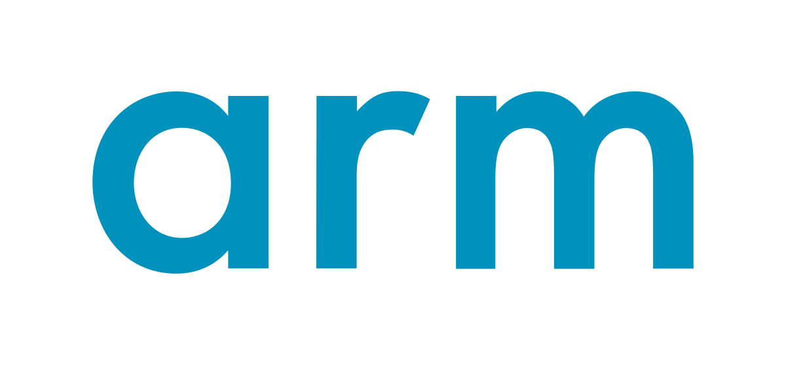

Jiecao Yu 俞杰草
Research Scientist
Facebook, Inc.
Email: jiecaoyu [AT] fb [DOT] com
About Me
I am currently a research scientist at Facebook, Inc. My work focuses on DNN pruning, quantization, and acceleration.
I obtained my Ph.D. from the University of Michigan - Ann Arbor under the supervision of Prof. Scott Mahlke. Before joining UMich in August 2014, I received my B.Eng. degree of Electrical Engineering in Zhejiang University, China.
If you need more information about my current work, please Contact Me.
My CV is available here (updated 10/2020).
Education
- Ph.D. Candidate, Computer Science & Engineering, 08/2014 - 09/2019
Advisor: Prof. Scott Mahlke
University of Michigan, Ann Arbor, MI
- M.S. Computer Science & Engineering, 08/2014 - 12/2015
University of Michigan, Ann Arbor, MI
Cumulative GPA: 4.00/4
- B.Eng. Electronic & Information Engineering, 08/2010 - 06/2014
Honored Minor, Advanced Honor Class of Engineering Education (ACEE)
Zhejiang University, Hangzhou, China
Cumulative GPA: 3.98/4
Publications
-
Mao Ye, Dhruv Choudhary, Jiecao Yu, Ellie Wen, Zeliang Chen, Jiyan Yang, Jongsoo Park, Qiang Liu, Arun Kejariwal. "Adaptive Dense-to-Sparse Paradigm for Pruning Online Recommendation System with Non-Stationary Data". arXiv: 2010.08655
[ paper ] -
Jiecao Yu, Andrew Lukefahr, Reetuparna Das, Scott Mahlke. "TF-Net: Deploying Sub-Byte Deep Neural Networks on Microcontrollers". ESWEEK-TECS special issue / the International Conference on Compilers, Architecture, and Synthesis for Embedded Systems (CASES), Oct, 2019
[ paper ] -
Xiaowei Wang, Jiecao Yu, Charles Augustine, Ravi Iyer, Reetuparna Das. "Bit Prudent In-Cache Acceleration of Deep Convolutional Neural Networks". The 25th IEEE International Symposium on High-Performance Computer Architecture (HPCA-25), Feb, 2019
[ paper ] -
Jiecao Yu, Jongsoo Park, Maxim Naumov. "Spatial-Winograd Pruning Enabling Sparse Winograd Convolution". arXiv: 1901.02132
[ paper ] -
Jiecao Yu, Andrew Lukefahr, David Palframa, Ganesh Dasika, Reetuparna Das, Scott Mahlke. "Scalpel: Customizing DNN Pruning to the Underlying Hardware Parallelism". The 44th International Symposium on Computer Architecture (ISCA-44), Jun, 2017
[ paper | slides | code ] -
Jiecao Yu, Andrew Lukefahr, Shruti Padmanabha, Reetuparna Das, Scott Mahlke. "Adaptive Cache Partitioning on a Composite Core". The PRISM-3 Workshop at ISCA-42, Jun, 2015
[ paper | slides ]
Experiences
- Facebook, Inc. 10/2019 - Present
Research Scientist, Manager: Dr. Jongsoo Park
Menlo Park, CA
- Facebook, Inc. 05/2018 - 08/2018
Research Intern, Manager: Dr. Jongsoo Park
Menlo Park, CA
- ARM Inc. 05/2017 - 07/2017
Research Intern, Manager: Dr. Ganesh Dasika
Austin, TX
- ARM Inc. 06/2016 - 08/2016
Research Intern, Manager: Dr. David Palframan
Austin, TX
- University of Southern California 07/2013 - 09/2013
Research Intern, Advisor: Prof. Melvin Breuer †2017
Los Angeles, CA

Last updated: Oct, 2020